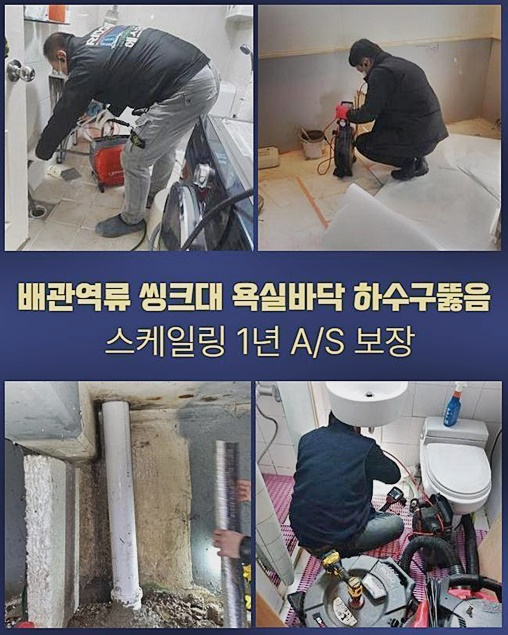
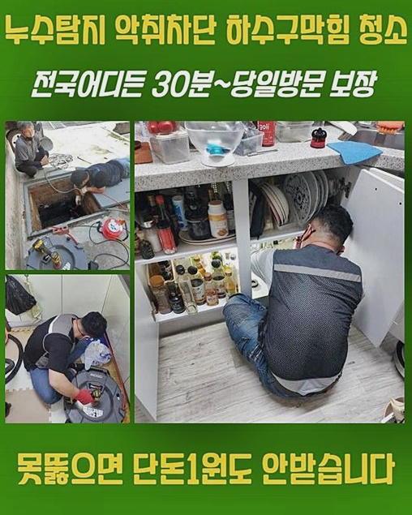
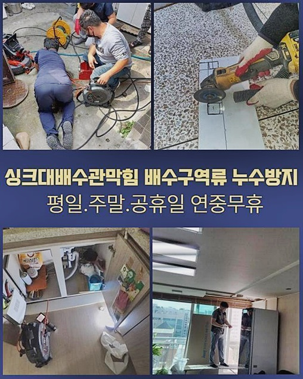
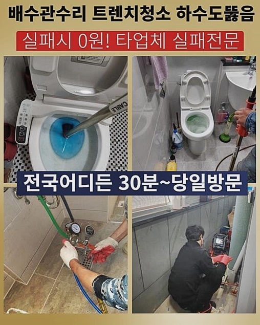
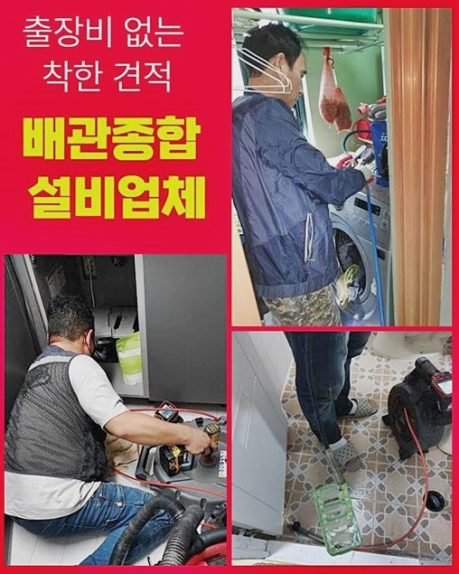
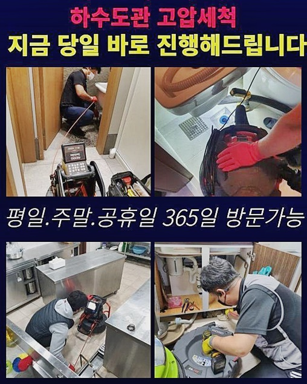
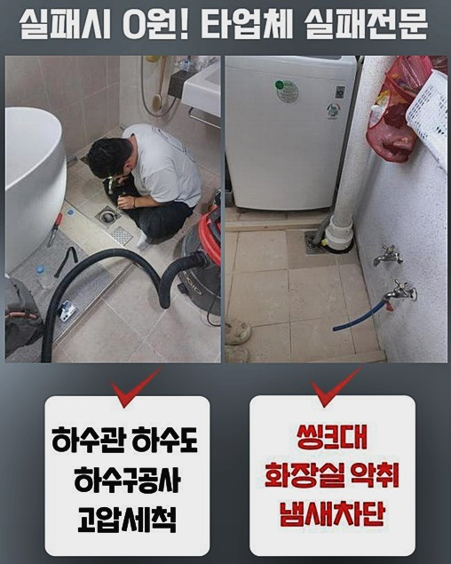

🏠 아산 득산동싱크대배수관막힘 점양동 하수구뚫어주는곳 부속수리
용인시 처인구 배관막힘 전문 시공 후기

📋 작업 개요
- 위치: 용인시 처인구, 수원시 영통구, 화성시 동탄
- 서비스 유형: 배관막힘, 고압세척, 내시경점검
- 작업 일시:
- 업체명: 하수구수사대 (010-5615-2118)
🔍 문제 상황
아산 득산동싱크대배수관막힘 점양동 하수구뚫어주는곳 부속수리
흔히 생기는 배수문제를 수습하고 복구하는 전문진이에요
여러분들이 상담을 원하신다면 요목조목 고민에 대해 답변드려요
갑작스럽게 욕실쪽에서 하수도가 이상하다는 문제로 빠르게 문제들의 공간으로 내방드렸죠
욕실공간은 사용을 하고난 뒤에는 머리카락뭉치와 상당수의 이물질이 누적되는 바람에 통수에 불능이 야기되는 경우가 빈번하게 보여요
이같은 문제에선 근방에서 살 수 있는 제품들로는 증상을 꺼트리는것이 까다로운 탓에 저희처럼 전문성이 뛰어난 케이블을 통해서 문제양상을 보이는 부분을 세척하는 것이 중요합니다
자주는 아니지만 끓는 점에 도달한 온수를 부어서 문제들을 없애보고자 시도해보시는 의뢰인분도 있으세요
이같은 방식들도 증상완화를 꾀하는데에는 무리가 따라요
수도를 끓여서 부어주면 고착물은 더욱더 굳어버리는 특징들을 띄기에 배관 컨디션을 악화시켜요
이같은 사항으로인해 배수구의 문제는 성능들이 최고수준인 장비를 운용하는것이 좋습니다
진단 시점에는 쓰는 기기를 이상이 없는지 체크해보고 의뢰자가 전해주신 현장으로 재빨리 달려갔죠
간단한 하수관의 증세를 각론하고 설명드린것처럼 머리카락과 석회들로 구성된 이물질이 퇴적됩니다

🔎 원인 분석
💡 전문가 진단: 정밀 진단 장비를 사용하여 슬러지의 고착 여부를 판명하고 타격/세척 작업을 실시했습니다.
그러므로 주기적으로 점검을 이어나가야되요
이제는 해결책에 대해서 안내하고 바로 증세를 살펴 문제를 어떠한 방법으로 완화하는지 세밀하게 안내할 예정입니다
문제들이 양산된 구간은 화장실쪽에 위치한 하단배수구였죠
확인해보았더니 일반적인 네모난 모양의 부속이 아닌 트렌치부분으로 보여졌어요
물이 안빠짐과 동시에 예기치못한 역류되는 문제도 지속되고 있었습니다
통상적으로 트랩부분을 거쳐 하수관로로 안내려간 오염물은 여과하여 액체형태의 하수는 중앙관로로 이동시키는 순기능을 하죠
바깥으로 안에 자리한 이물질들이 외부로 역류하게되면서 트랩부품도 제 기능을 수행할 수 없는 모습이였습니다
고객분은 증세가 불거지고서 하수설비를 쓰지못한다고 불편들을 말씀해주셨는데 스트레스도 많았을걸로 생각되어졌죠
이처럼 욕실쪽의 하수라인에서 문제가 발발할 시 예기치않은 피해가 생겨나죠
그러므로 조속하고 명확하게 원인들을 시정하는것이 첫번째로 중요해요
문제 시정을 위해선 증세의 원인부터 아는것이 중요해요
앞코의 시야확보 부품이 부착되어있는 내시경기기로 배수관으로 투입시키고자하면 안쪽 상황을 파악해가며 이물 누적의 양상을 보고 해결을 진행하게됩니다
이때문에 여러가지의 문제들이 양산될 경우에 반드시 써야되는 장비입니다

🔧 작업 과정
앞부분에서 잔여물이 축적되어 장비를 배수라인으로 넣는게 쉽지 않았습니다
하지만 증상에 있어서 가만히 있을 순 없어요
지속적인 시도끝에 끝내 장비를 삽입시켰고 깊은곳도 관찰할 목적으로 안쪽을 체크하다가 시야가 확보가 안되었어요
벽면쪽엔 슬러지들도 어마어마했죠
그리고 하수관을 제대로 파악할 수 없는것으로 생각했을때 외부도 깊숙한 부분에도 많은 양의 잔해물이 쌓여진걸 보았습니다
지속적으로 배관으로 내시경을 삽입하니 벽측에선 바닥잔해로 파악되는게 육안으로 드러났죠
하수도의 심층부엔 뒤엉킨 모습으로 자리잡은 잔여물이 존재하고있었죠
장비를 투입해봐도 틈들은 보이질 않았으나 흡착된 잔여물은 군데군데 보였습니다
이물들이 특정된 상태가 아님에도 굳어버린 이물이 하수관로의 끝머리서부터 축적된것을 알 수 있었어요
애로사항이 많던 배관컨디션이였으나 고객분의 의뢰였기떄문에 현 시점을 방임적인 태도로 일관할 수 없었어요
입구쪽에 존재하던 여러가지의 오염물은 손수 걷어내주고 하수도 깊이 쌓인 개체는 샤프트 장치를 통하여 제거시킬 예정이였습니다
전문가용 도구들을 가용하여 서둘러서 수리를 실시했습니다
허나 이물들을 청소하며 미스테리한 것이 있었는데요
어떠한 까닭으로 마루의 잔해가 하수라인에서 존재하는건지 의문이였죠
위와같은 궁금증을 가지고 작업 도중에 고객님은 이런 사안에 대하여 말씀하셨는데요
파악해보니 한달전쯤 도배작업을 수행했는데 예상컨대 조각이 하수관으로 투입된걸로 예상된다고 하셨죠
공사 진행뒤에 폐기물들은 기술자들이 버려야되지만 간혹 정리부분에 철두철미하지 못한 전문진일 시엔 이곳에서처럼 적절치 못한 방식으로 잔해수도를 폐기시킵니다
파악하기로는 저희전문진이 방문했었던 곳에서부터 이러한 문제들로 불편들을 반복적으로 받으신걸로 보여졌는데요
구간마다 장판오염물이라는 이물질이 배수과정을 방해하는 바람에 흘러야될 오수가 흘러나가질 못했어요
지속적인 제거와 석션과정까지 진행한 결과 비로소 배수관을 원상복구 시켰어요


✅ 작업 완료
통수절차가 잘 이뤄지는지 테스트를 해보니 빠른 속도로 통수가 이뤄졌죠
시공 뒤에 이같이 내려가야하나 하수관로가 이물로 막히게되며 고여버리다가 역류도 불거지게되었죠
갖가지의 장소들을 방문드렸지만 분야는 달라고 전문업체의 시각에서는 화가나기도 하고 고객이 감당했을 불편들에 안타까움마저 들죠
이와같이 증세들을 완벽히 작업하고서 저희전문진도 마무리 후 철수할 수 있었어요
예기치못하게 혹시 배수장애가 나타나면 저희의 안내를 초고로하여 조속히 해결해주세요!
이 말고도 궁금증이 존재하신다면 빠르게 전화하셔서 질의하셔도 괜찮으니 편히 연락주시면 여러분께 도움들을 드릴게요




⚠️ 하수구 배관 막힘 예방 및 관리 가이드
- ✅ 머리카락, 비닐, 물티슈 등 물에 분해되지 않는 이물질은 절대 흘려보내지 마세요.
- ✅ 기름기 많은 식기는 설거지 전 키친타올로 먼저 기름때를 닦아내세요.
- ✅ 주기적으로 배수구에 뜨거운 물을 가득 부어주어 유지방 고착을 방지하세요.
- ✅ 작업 후 1년 이내 재발 시 무상 A/S 보증 서비스를 제공합니다.
💡 핵심 정리
- 확실한 장비 작업(내시경 점검 및 샤프트 스케일링)으로 원인을 뿌리 뽑습니다.
- 작업 후 1년 이내에 동일한 부위 재발 시 100% 무상 A/S 서비스를 보장합니다.
- 서울 · 경기 · 인천 전 지역에 24시간 언제든 긴급 출동할 수 있도록 항시 대기 중입니다.
❓ 자주 묻는 질문 (FAQ)
🚨 용인시 처인구 배관막힘 문제로 고민이신가요?
정확한 원인 진단과 확실한 시공으로 재발 없는 해결을 약속드립니다.
24시간 긴급 출동 | 서울 · 경기 · 인천 전지역 | 1년 내 재발 시 무상 A/S